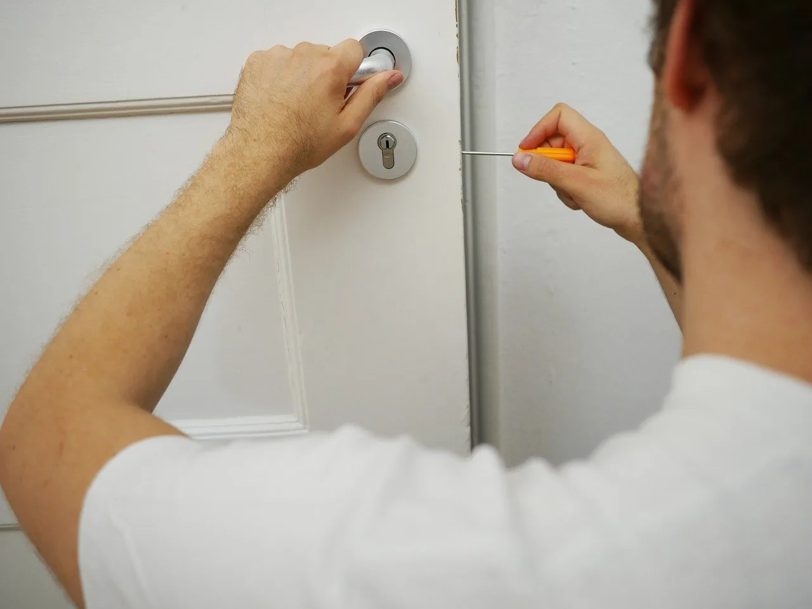

Serrurier · Lyon & alentours · Disponibilité à confirmer par téléphone
Serrurier à Lyon pour une ouverture de porte
Porte claquée, clé perdue ou serrure qui ne fonctionne plus ? Expliquez ce qui s'est passé et indiquez votre commune pour vérifier la disponibilité et les solutions possibles.
Appeler le 07 78 95 24 40Avant toute intervention, demandez les conditions et le montant du devis.

Décrire votre situation
Les informations utiles au téléphone
La solution dépend notamment de l'état de la porte, de la serrure et de vos clés. Pour obtenir une première réponse utile, précisez :
- la commune et le type de porte ;
- si la porte est claquée, verrouillée ou si la clé est perdue/cassée ;
- si la serrure a déjà été endommagée ou si la porte ferme encore.
Ne forcez pas la serrure : cela peut aggraver le problème. En cas de danger immédiat pour une personne, contactez les services d'urgence appropriés.
Comment commencer
Du premier appel à la décision
- Décrivez la porteExpliquez les faits, sans supposer à l'avance la pièce à remplacer.
- Vérifiez la zone et le délaiDonnez votre commune et demandez si un déplacement est possible.
- Demandez le devisFaites préciser le montant et les conditions avant d'accepter les travaux.
Questions fréquentes
Ouverture de porte : vos questions
La porte est simplement claquée : que faire ?
Évitez de forcer la porte ou la serrure. Décrivez au téléphone l'état de la porte et votre commune afin de vérifier les solutions et les conditions de déplacement.
Puis-je connaître le prix avant le déplacement ?
Demandez les frais de déplacement, les majorations possibles et les conditions de devis avant de convenir de l'intervention. Le montant dépend de la situation décrite et doit être confirmé par le professionnel.
Une porte bloquée à Lyon ou aux alentours ?
Appelez pour présenter votre situation et vérifier les disponibilités, la zone et le devis.
Appeler · 07 78 95 24 40 Retour à l'accueil